TrenchR: Using energy balances to estimate body temperatures
Lauren Buckley and the TrEnCh project, Department of Biology, University of Washington
2020-01-24
Source:vignettes/TeTutorial.Rmd
TeTutorial.Rmd#Load TrenchR package
library(TrenchR)This tutorial covers how to construct energy balances for applications such as estimating the body temperature of organisms. The tutorial first reviews general functions to estimate forms of heat exchange and balance the exchanges. Finally, we present functions to implement specialized energy balances for particular organisms.
Operative environmental temperatures
The body temperatures, \(T_b\), of organisms can depart dramatically from air temperatures due to energy exchange with the environment. Heat is gained by absorbing solar and thermal radiation and from metabolic reactions. Heat is lost through the organism’s emission of radiation and the evaporation of water. The organism exchanges heat with the surrounding air or water via convection and with the ground and other solid surfaces in contact via conduction. The balance of these heat exchanges can be estimated and is referred to as operative environmental temperature, \(T_e\). The \(T_e\) indicates the steady-state temperature of an organism with given physical properties in a particular environment (G. S. Bakken 1992).
Calculations of operative environmental temperatures are based in balancing energy input and output to organisms. The following accounting of heat gains and losses at the surface of the organism can be used to estimate \(T_e\) (Gates 2012): \[Qnet = Qabs - Qemit - Qconv - Qcond - Qmet - Qevap,\] where \(Qnet\) is the net energy exhange with the environment (W), \(Qabs\) is the solar and thermal radiation absorbed (W), \(Qemit\) is the thermal radiation emitted (W), \(Qconv\) is energy exchange due to convection (W), \(Qcond\) is energy exchange due to conduction (W), \(Qmet\) is the energy emitted due to metabolism (W), and \(Qevap\) is the energy emitted due to evaporative water loss (W).
The energy balance is available in TrenchR as follows:
Qnet_Gates(Qabs=500, Qemit=10, Qconv=100, Qcond=100, Qmet=10, Qevap=5)## [1] 275We briefly review each component of the energy balance below. Details are available in biophysical ecology texts (Gates 2012; Campbell and Norman 2012).
Solar radiation, Qabs
The solar and thermal radiation absorbed by animals, \(Q_{abs} (W)\), is the sum of direct \(S_{dir}\), diffuse \(S_{dif}\), and reflected \(S_{ref}\) solar radiation (\(W/m^2\)). The sum is weighted by the organism’s surface area \(A\) exposed to the radiation sources. Additionally, all forms of incoming radiation are multipled by the solar absorptivity of the animal surface (\(a\) proportion) to estimate absorbed radiation. The sumation of incoming solar radiation is thus as follows: \[Qabs= a*A_{dir}*S_{dir} + a*A_{dif}*S_{dif} + a*A_{ref}*S_{ref},\] where \(A_{dir}\), \(A_{dif}\), and \(A_{ref}\) are the surface areas expsed to direct, diffuse, and reflected solar radiation, respectively.
The summation is available in R as follows:
plot(seq(100,1000,100), Qradiation_absorbed(a=0.9, A=1, psa_dir=0.4, psa_ref=0.4, S_dir=seq(100,1000,100), S_dif=200, a_s=0.5), type="l", xlab = expression("direct solar radiation" ~ (W/m^{2})), ylab = "solar radiation absorbed (W)")
points(seq(100,1000,100), Qradiation_absorbed(a=0.9, A=1, psa_dir=0.2, psa_ref=0.4, S_dir=seq(100,1000,100), S_dif=200, a_s=0.5), type="l", lty="dashed")
points(seq(100,1000,100), Qradiation_absorbed(a=0.45, A=1, psa_dir=0.4, psa_ref=0.4, S_dir=seq(100,1000,100), S_dif=200, a_s=0.5), type="l", lty="dotted")
points(seq(100,1000,100), Qradiation_absorbed(a=0.9, A=1, psa_dir=0.4, psa_ref=0.4, S_dir=seq(100,1000,100), S_dif=200, a_s=0.2), type="l", lty="dotdash")
legend("topleft", title="parameters", legend=c("a=0.9, psa_dir=0.4, a_s=0.5", "a=0.9, psa_dir=0.2, a_s=0.5", "a=0.45, psa_dir=0.4, a_s=0.5", "a=0.9, psa_dir=0.4, a_s=0.2"), lty=c("solid","dashed","dotted","dotdash") )In the functions, psa_dir and psa_ref are the proportions of surface area exposed to direct and reflected solar radiation, respectively. We assume psa_dif = psa_dir. The functions prop_silhouette_area() and prop_silhouette_area_shapes() provide assistance calculating the proportional of surface area exposed via estimating silhouette area. Additionally, see the microclimate tutorial for tools for estimating incoming solar radiation.
Thermal radiation, Qemit
The rate of emission of thermal radiation from the surface of an animal, \(Q_{emit} (W)\), is determined by the difference between the surface temperature of the animal \(T_b (K)\) and the temperatures of the air \(T_a (K)\) and of the ground \(T_g (K)\). \(T_a\) is additionally used to estimate sky temperature \(T_{sky} (K)\), the effective radiant temperature of the sky as \(T_{sky}=1.22*(T_a-273.15)-20.4+273.15\) (Gates 2012). The following expressions can be used to estimate \(Q_{emit} (W)\) for animals in enclosed and open environments, respectively: \[ enclosed: Q_{emit}= A_r \epsilon \sigma (T_b^4 - T_a^4)\\ open: Q_{emit}= \epsilon \sigma (A_s (T_b^4 - T_{sky}^4)+A_r (T_b^4 - T_g^4)), \] where \(A_s\) and \(A_r\) are the areas (\(m^2\)) exposed to the sky (or enclosure) and the ground, respectively; \(\epsilon\) is the longwave infrared emissivity of skin [proportion, 0.95 to 1 for most animals (Gates 2012); and \(\sigma\) is the Stefan-Boltzmann constant (\(5.673*10^{-8} W m^{-2} K^{-4}\)).
The function is available in R as follows:
plot(293:313, Qemitted_thermal_radiation(epsilon=0.96, A=1, psa_dir=0.4, psa_ref=0.6, T_b=293:313, T_g=293, T_a=298, enclosed=FALSE), type="l", xlab = "body surface temperature, Tb (K)", ylab = "emitted thermal radiation, Qemit (W)")
points(293:313, Qemitted_thermal_radiation(epsilon=0.96, A=1, psa_dir=0.2, psa_ref=0.8, T_b=293:313, T_g=293, T_a=298, enclosed=TRUE), type="l", lty="dashed")
points(293:313, Qemitted_thermal_radiation(epsilon=0.96, A=1, psa_dir=0.4, psa_ref=0.8, T_b=293:313, T_g=283, T_a=298, enclosed=FALSE), type="l", lty="dotted")
points(293:313, Qemitted_thermal_radiation(epsilon=0.96, A=1, psa_dir=0.2, psa_ref=0.6, T_b=293:313, T_g=283, T_a=298, enclosed=FALSE), type="l", lty="dotdash")
legend("topleft", title="parameters", legend=c("psa_dir=0.4, T_g=293","psa_dir=0.2, T_g=293","psa_dir=0.4, T_g=283","psa_dir=0.2, T_g=283"), lty=c("solid","dashed","dotted","dotdash") )Convection, Qconv
Animals exchange heat with the air or water they are immersed in at a rate determined by the temperature difference between the temperature of the animal, \(T_b (K)\), and that of the air or water, \(T_a (K)\). The rate is also determined by the animal’s surface area exposed to the air or water, which we estimate from the input parameters of the animal’s surface area, \(A (m^2)\) and the proportion of the surface area in contact with the surrounding fluid, \(proportion\). A heat transfer coefficient, \(H_L (W m^{-2} K^{-1})\), which can be estimated using the relations below, is used to estimate the rate of heat exchange. An enhancement factor multiplier, \(ef\), can also be incorporated to account for increases in heat exchange resulting from air turbulance in field conditions. Conduction can be estimated as follows: \[Qconv= ef*H_L*(A*proportion)*(Ta-Tb).\]
The function is available in R:
plot(293:313, Qconvection(T_a= 303,T_b= 293:313,H=5,A=0.0025, proportion=0.6), type="l", xlab = "ground temperature (K)", ylab = "Q convection (W)")
points(293:313, Qconvection(T_a= 303,T_b= 293:313,H=15,A=0.0025, proportion=0.6), type="l",lty="dashed")
points(293:313, Qconvection(T_a= 303,T_b= 293:313,H=5,A=0.0025, proportion=0.3), type="l",lty="dotted")
points(293:313, Qconvection(T_a= 303,T_b= 293:313,H=15,A=0.0025, proportion=0.3), type="l",lty="dotdash")
legend("topleft", title="parameters", legend=c("H=5, proportion=0.6","H=15, proportion=0.6","H=5, proportion=0.3","H=15, proportion=0.3"), lty=c("solid","dashed","dotted","dotdash") )The convective heat transfer coefficient depends on whether the heat exchange is free or forced (due to fluid flow). The variables involved in heat transfer can be combined into dimensionless groups that are used to compare the scales of heat exchange processes and thus whether modeling free or forced convection is more appropriate. We provide the primary dimesionless numbers.
The Nusselt number provides a dimensionless estimate of conductance as is estimated as \(Nu = H_L * D / K\), where \(H_L\) is the convective heat transfer coefficient (\(W m^{-2} K^{-1}\)), \(D\) is the characteristic dimension (\(m\)), and \(K\) is thermal conductivity (\(W K^{-1}m^{-1}\)).
The Prandtl number describes the ratio of kinematic viscosity to thermal diffusivity as \(Pr= c_p \mu /K\), where \(c_p\) is the specific heat at constant pressure (\(J mol^{-1} K^{-1}\)) and \(\mu\) is dynamic viscosity (\(mol \:s^{-1}m^{-1}\)).
The Reynolds Number indicates the amount of turbulence in air or water flows and is estimated as the ratio of internal viscous forces: \(Re= VD / \nu\), where \(V\) is wind speed (\(m/s\)), \(D\) is the characteristic dimension (\(m\)), and \(\nu\) is the kinematic viscosity (\(m^2 s^{-1}\)). Kinematic viscosity is the ratio of dynamic viscosity to the density of the fluid.
The Grashof number describes the abilty of a parcel of fluid warmer or colder than the surrounding fluid to rise against or fall with the attractive force of gravity. It is estimated as the ratio of a buoyant force times an inertial force to the square of a viscous force: \(Gr = g D^3 \frac{\mid Tg-Ta \mid}{Ta {\nu}^2}\), where \(g\) is gravitational acceleration (\(g=9.8 m/s\)).
The dimensionless groups are available in R as follows:
plot(1:30, Nusselt_number(H_L=1:30, D=0.01, K=0.5), type="l", xlab = expression("heat transfer coefficient" ~ (W ~ m^{-2} ~ K^{-1})), ylab = "Nusselt number")
points(1:30, Nusselt_number(H_L=1:30, D=0.01, K=1.5), type="l", lty="dashed")
points(1:30, Nusselt_number(H_L=1:30, D=0.05, K=0.5), type="l", lty="dotted")
points(1:30, Nusselt_number(H_L=1:30, D=0.05, K=1.5), type="l", lty="dotdash")
legend("topleft", title="parameters", legend=c("D=0.01, K=0.5","D=0.01, K=1.5","D=0.05, K=0.5","D=0.05, K=1.5"), lty=c("solid","dashed","dotted","dotdash") )plot(1:30, Prandtl_number(c_p=1:30, mu=0.00001, K=0.5), type="l", xlab = expression("specific heat at constant pressure" ~ (J ~ mol^{-1} ~ K^{-1})), ylab = "Prandtl number")
points(1:30, Prandtl_number(c_p=1:30, mu=0.00002, K=0.5), type="l", lty="dashed")
points(1:30, Prandtl_number(c_p=1:30, mu=0.00001, K=1.5), type="l", lty="dotted")
points(1:30, Prandtl_number(c_p=1:30, mu=0.00002, K=1.5), type="l", lty="dotdash")
legend("topleft", title="parameters", legend=c("mu=0.00001, K=0.5","mu=0.00002, K=0.5","mu=0.00001, K=1.5","mu=0.00002, K=1.5"), lty=c("solid","dashed","dotted","dotdash") )plot(seq(0,5,0.2), Reynolds_number(V=seq(0,5,0.2), D=0.001, nu=1), type="l", xlab = "wind speed (m/s)", ylab = "Reynolds number")
points(seq(0,5,0.2), Reynolds_number(V=seq(0,5,0.2), D=0.001, nu=1.5), type="l", lty="dashed")
points(seq(0,5,0.2), Reynolds_number(V=seq(0,5,0.2), D=0.002, nu=1), type="l", lty="dotted")
points(seq(0,5,0.2), Reynolds_number(V=seq(0,5,0.2), D=0.002, nu=1.5), type="l", lty="dotdash")
legend("topleft", title="parameters", legend=c("D=0.001, nu=1","D=0.001, nu=1.5","D=0.002, nu=1","D=0.002, nu=1.5"), lty=c("solid","dashed","dotted","dotdash") )plot(seq(0,0.01,0.001), Grashof_number(Ta=30, Tg=35, D=seq(0,0.01,0.001), nu=1.0), type="l", xlab = "characteristic dimension (m)", ylab = "Grashof number")
points(seq(0,0.01,0.001), Grashof_number_Gates(Ta=30, Tg=35, beta=0.00367, D=seq(0,0.01,0.001), nu=1.0), type="l", col="red")
points(seq(0,0.01,0.001), Grashof_number(Ta=30, Tg=35, D=seq(0,0.01,0.001), nu=1.4), type="l",lty="dashed")
points(seq(0,0.01,0.001), Grashof_number_Gates(Ta=30, Tg=35, beta=0.00367, D=seq(0,0.01,0.001), nu=1.4), type="l", col="red",lty="dashed")
legend("topleft", title="parameters", legend=c("Grashof_number, nu=1","Grashof_number_Gates, nu=1","Grashof_number, nu=1.4","Grashof_number_Gates, nu=1.4"), lty=c("solid","dashed","dotted","dotdash") )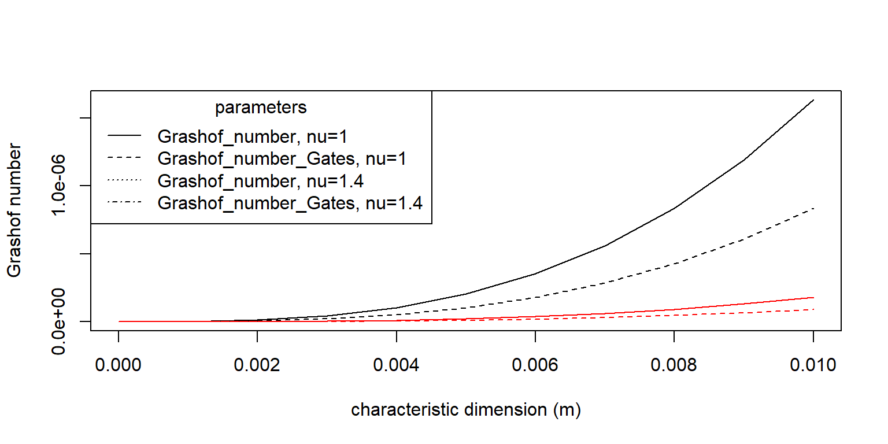
#WHY DIFFERENT BETWEEN BOOKS?Relations among the dimensionless groups can also be used for estimation. Empirically-derived relationships can be used to estimate the Nusselt number \(Nu\) from the Reynolds number \(Re\) or the Grashof number \(Gr\). Comparisons of \(Gr\) and \(Re\) allow determining whether modelling free or forced convection is appropraite. Forced convection is appropriate when \(Gr \leq 16 Re^2\). For convenience, we provide the relationships as R functions:
plot(1:10, Nu_from_Re(Re=1:10, taxa="sphere"), type="l", xlab = "Re", ylab = "Nu", ylim=c(0,4))
points(1:10, Nu_from_Re(Re=1:10, taxa="cylinder"), type="l", lty="dashed")
points(1:10, Nu_from_Re(Re=1:10, taxa="frog"), type="l", lty="dotted")
points(1:10, Nu_from_Re(Re=1:10, taxa="lizard_traverse_to_air_flow"), type="l", lty="dotdash")
points(1:10, Nu_from_Re(Re=1:10, taxa="lizard_parallel_to_air_flow"), type="l", lty="dotdash", col="red")
points(1:10, Nu_from_Re(Re=1:10, taxa="lizard_surface"), type="l", lty="dotdash", col="orange")
points(1:10, Nu_from_Re(Re=1:10, taxa="lizard_elevated"), type="l", lty="dotdash", col="green")
points(1:10, Nu_from_Re(Re=1:10, taxa="flyinginsect"), type="l", lty="longdash")
points(1:10, Nu_from_Re(Re=1:10, taxa="spider"), type="l", lty="twodash")
legend("topright", title="taxa", legend=c("sphere","cylinder","frog","lizard_traverse_to_air_flow","lizard_parallel_to_air_flow","lizard_surface","lizard_elevated","flyinginsect","spider"), lty=c("solid","dashed","dotted","dotdash","dotdash","dotdash","dotdash","longdash","twodash"), col=c("black","black","black","black","red","orange","green","black","black" ) )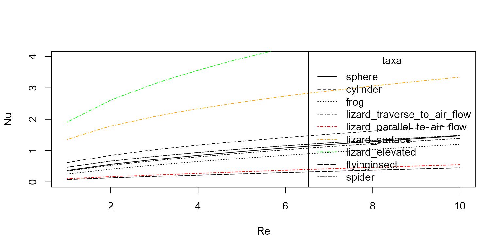
Nu_from_Gr(Gr=5)## [1] 0.7177674Free_or_forced_convection(Gr=100, Re=5)## [1] "intermediate condition, mixed convection based on Nusselt numerbers is appropriate"Free_or_forced_convection(Gr=1, Re=5)## [1] "forced convection"Free_or_forced_convection(Gr=1000, Re=5)## [1] "free convection"We offer methods to estimate the convective heat transfer coefficient based on either empirical measurements (heat_transfer_coefficient()) or approximating the animal shape as a sphere (heat_transfer_coefficient_approximation()). Approximating the animal shape as a sphere enables simplification while also producing an reasonable approximation (J. W. Mitchell 1976). The functions approximate forced convective heat transfer as a function of windspeed \(V (m/s)\), the characteristic dimension \(D (m)\), the thermal conductivity of the air \(K (W m^{-1} K^{-1})\), the kinematic viscocity of the air \(\nu (m^2 s^{-1})\), and the taxa or a generic shape. An additional, simplified function (heat_transfer_coefficient_simple()) provides a reasonable approximation based on \(V\) and \(D\) for most environmental conditions.
par(mar=c(5,5,3,2))
plot(seq(0,3,0.25), heat_transfer_coefficient(V=seq(0,3,0.25),D=0.05,K= 25.7 * 10^(-3),nu= 15.3 * 10^(-6), "sphere"), type="l", xlab = "Air velocity (m/s)", ylab = expression("heat transfer coefficient," ~ H[L] ~ (W ~ m^{-2} ~ K^{-1})))
points(seq(0,3,0.25), heat_transfer_coefficient(V=seq(0,3,0.25),D=0.05,K= 25.7 * 10^(-3),nu= 15.3 * 10^(-6), "cylinder"), type="l", lty="dashed")
points(seq(0,3,0.25), heat_transfer_coefficient(V=seq(0,3,0.25),D=0.05,K= 25.7 * 10^(-3),nu= 15.3 * 10^(-6), "frog"), type="l", lty="dotted")
points(seq(0,3,0.25), heat_transfer_coefficient(V=seq(0,3,0.25),D=0.05,K= 25.7 * 10^(-3),nu= 15.3 * 10^(-6), "lizard_surface"), type="l", lty="dotdash")
points(seq(0,3,0.25), heat_transfer_coefficient(V=seq(0,3,0.25),D=0.05,K= 25.7 * 10^(-3),nu= 15.3 * 10^(-6), "lizard_elevated"), type="l", lty="dotdash")
points(seq(0,3,0.25), heat_transfer_coefficient(V=seq(0,3,0.25),D=0.05,K= 25.7 * 10^(-3),nu= 15.3 * 10^(-6), "flyinginsect"), type="l", lty="longdash")
points(seq(0,3,0.25), heat_transfer_coefficient(V=seq(0,3,0.25),D=0.05,K= 25.7 * 10^(-3),nu= 15.3 * 10^(-6), "spider"), type="l", lty="twodash")
legend("bottomright", title="taxa", legend=c("sphere","cylinder","frog","lizard_surface","lizard_elevated","flyinginsect","spider"), lty=c("solid","dashed","dotted","dotdash","dotdash","dotdash","dotdash","longdash","twodash") )par(mar=c(5,5,3,2))
plot(seq(0,3,0.25), heat_transfer_coefficient_approximation(V=seq(0,3,0.25),D=0.05,K= 25.7 * 10^(-3),nu= 15.3 * 10^(-6), "sphere"), type="l", xlab = "Air velocity (m/s)", ylab = expression("heat transfer coefficient," ~ H[L] ~ (W ~ m^{-2} ~ K^{-1})))
points(seq(0,3,0.25), heat_transfer_coefficient_approximation(V=seq(0,3,0.25),D=0.05,K= 25.7 * 10^(-3),nu= 15.3 * 10^(-6), "frog"), type="l", lty="dashed")
points(seq(0,3,0.25), heat_transfer_coefficient_approximation(V=seq(0,3,0.25),D=0.05,K= 25.7 * 10^(-3),nu= 15.3 * 10^(-6), "lizard"), type="l", lty="dotted")
points(seq(0,3,0.25), heat_transfer_coefficient_approximation(V=seq(0,3,0.25),D=0.05,K= 25.7 * 10^(-3),nu= 15.3 * 10^(-6), "flyinginsect"), type="l", lty="dotdash")
points(seq(0,3,0.25), heat_transfer_coefficient_approximation(V=seq(0,3,0.25),D=0.05,K= 25.7 * 10^(-3),nu= 15.3 * 10^(-6), "spider"), type="l", lty="longdash")
legend("bottomright", title="taxa", legend=c("sphere","frog","lizard","flyinginsect","spider"), lty=c("solid","dashed","dotted","dotdash","longdash") )plot(seq(0,3,0.25), heat_transfer_coefficient_simple(V=seq(0,3,0.25),D=0.05), type="l", xlab = "Air velocity (m/s)", ylab = expression("heat transfer coefficient," ~ H[L] ~ (W ~ m^{-2} ~ K^{-1})))
points(seq(0,3,0.25), heat_transfer_coefficient_simple(V=seq(0,3,0.25),D=0.03), type="l", lty="dashed")
points(seq(0,3,0.25), heat_transfer_coefficient_simple(V=seq(0,3,0.25),D=0.07), type="l", lty="dotted")
legend("bottomright", title="characteristic dimension (m)", legend=c(0.03,0.05,0.07), lty=c("dashed","solid","dotted") )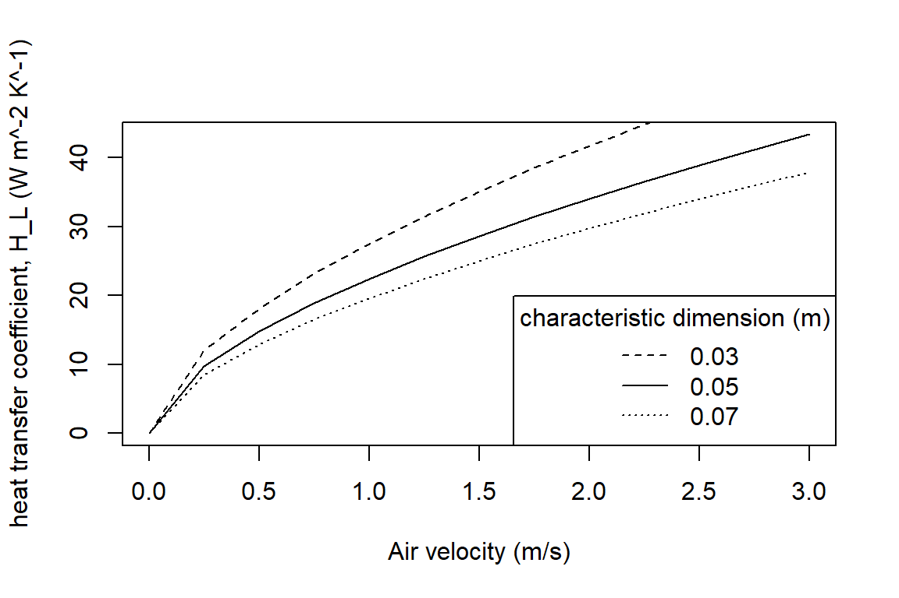
Conduction, Qcond
Animals exchange heat with the substrate and other surfaces via contact proportional to the difference between the surface temperature of the animal, \(T_b (K)\), and the substrate temperature, \(T_s (K)\). This conduction occurs via diffusion of heat. The extent of energy exchange is additionally determined by the area of contact and the thickness of the skin or other animal suface (assumes a well mixed interior, see NicheMapR for approaches without this assumption). Finally, the rate of diffusion depends on the thermal conductivity of the materials in contact. Our two basic functions for estimating conduction differ in whether the rate limiting step is the thermal conductivity of the animal [conductance_animal()] or the substrate [conductance_substrate()]. The thermal conductivity of the ground is generally greater than that of animal tissues, so animal thermal conductivity is generally the rate limiting step and most applications should use conductance_animal().
Both variables take as parameters the animal’s surface area, \(A (m^2)\), and the proportion of the surface area in contact with the substrate, \(proportion\).
When animal conductance is the rate limiting step, \(Qcond\) can be estimated as follows: \[Qcond= A*proportion*K*(T_b-T_g)/d, \] where \(K\) is thermal conductivity (\(W K^{-1} m^{-1}\)), \(T_g\) is ground (surface) temperature \((K)\), \(T_b\) is body temperature \((K)\), and \(d\) is the mean thickness of the animal skin (surface, \(m\)). This formulation assumes the organism has a well mixed interior rather than an interior temperature gradient.
When substrate thermal conductivity is the rate limiting step, \(Qcond\) can be estimated as follows: \[Qcond= A*proportion*(2K_g/D)*(T_b-T_g),\] where \(K_g\) is the thermal conductivity of substrate (\(W K^{-1} m^{-1}\)) and \(D\) is the characteristic dimension of the animal (\(m\)).
The functions are available in R:
plot(293:313, Qconduction_animal(T_g= 293:313,T_b=303,d=10^-6,K=0.3,A=10^-3, proportion=0.2), type="l", xlab = "ground temperature (K)", ylab = "Q conductance (W)")
points(293:313, Qconduction_animal(T_g= 293:313,T_b=303,d=10^-6,K=0.5,A=10^-3, proportion=0.2), type="l", lty="dashed")
points(293:313, Qconduction_animal(T_g= 293:313,T_b=303,d=10^-6,K=0.3,A=10^-3, proportion=0.4), type="l", lty="dotted")
points(293:313, Qconduction_animal(T_g= 293:313,T_b=303,d=10^-6,K=0.5,A=10^-3, proportion=0.4), type="l", lty="dotdash")
legend("topright", title="parameters", legend=c("K=0.3, proportion=0.2","K=0.5, proportion=0.2","K=0.3, proportion=0.4","K=0.5, proportion=0.4"), lty=c("solid","dashed","dotted","dotdash") )plot(293:313, Qconduction_substrate(T_g= 293:313,T_b=303,D=0.01,K_g=0.3,A=10^-2, proportion=0.2), type="l", xlab = "ground temperature (K)", ylab = "Q conductance (W)")
points(293:313, Qconduction_substrate(T_g= 293:313,T_b=303,D=0.01,K_g=0.5,A=10^-2, proportion=0.2), type="l", lty="dashed")
points(293:313, Qconduction_substrate(T_g= 293:313,T_b=303,D=0.01,K_g=0.3,A=10^-2, proportion=0.4), type="l", lty="dotted")
points(293:313, Qconduction_substrate(T_g= 293:313,T_b=303,D=0.01,K_g=0.5,A=10^-2, proportion=0.4), type="l", lty="dotdash")
legend("topright", title="parameters", legend=c("K=0.3, proportion=0.2","K=0.5, proportion=0.2","K=0.3, proportion=0.4","K=0.5, proportion=0.4"), lty=c("solid","dashed","dotted","dotdash") )Metabolism, Qmet
Rates of heat production associated with metabolism are generally estimated using scaling relationships based on generalizing empirical data. Metabolic rates scale as a power law function of mass with an exponent less than 1 such that the per-mass metabolic rate declines with increasing mass. Metabolic rates also increase exponentially with temperature. The generally form of the relationship is \(B=M^x \exp(-E_i/{kT})\), where \(M\) is mass, \(x\) is an exponent approximating 0.75, \(E_i\) is the average activation energy for the rate-limiting enzyme-catalyzed biochemical reactions of metabolism, \(k\) is the Boltzmann constant, and \(T\) is body temperature (Gillooly et al. 2001). We offer functions that both do not [Qmetabolism_from_mass()] and do [Qmetabolism_from_mass_temp()] include temperature dependence for a variety of taxa.
plot(1:100, Qmetabolism_from_mass(m=1:100,"bird"), type="l", xlab = "mass (g)", ylab = "metabolism (W)", log='xy', ylim=c(0.1,2))
points(1:100, Qmetabolism_from_mass(m=1:100,"mammal"), type="l", lty="dashed")
points(1:100, Qmetabolism_from_mass(m=1:100,"reptile"), type="l", lty="dotted")
legend("topleft", title="taxa", legend=c("bird","mammal","reptile"), lty=c("solid","dashed","dotted") )plot(1:100, Qmetabolism_from_mass_temp(m=1:100, T_b=303,"bird"), type="l", xlab = "mass (g)", ylab = "metabolism (W)", ylim=c(0,0.1))
points(1:100, Qmetabolism_from_mass_temp(m=1:100, T_b=303,"reptile"), type="l", lty="dotted")
points(1:100, Qmetabolism_from_mass_temp(m=1:100, T_b=303,"amphibian"), type="l", lty="dotdash")
points(1:100, Qmetabolism_from_mass_temp(m=1:100, T_b=303,"invertebrate"), type="l", lty="twodash")
legend("top", title="taxa", legend=c("bird,mammal","reptile","amphibian","invertebrate"), lty=c("solid","dotted","dotdash","twodash") )plot(293:313, Qmetabolism_from_mass_temp(m=5, T_b=293:313,"bird"), type="l", xlab = "temperature (K)", ylab = "metabolism (W)", ylim=c(0,0.1))
points(293:313, Qmetabolism_from_mass_temp(m=5, T_b=293:313,"reptile"), type="l", lty="dotted")
points(293:313, Qmetabolism_from_mass_temp(m=5, T_b=293:313,"amphibian"), type="l", lty="dotdash")
points(293:313, Qmetabolism_from_mass_temp(m=5, T_b=293:313,"invertebrate"), type="l", lty="twodash")
legend("topleft", title="taxa", legend=c("bird,mammal","reptile","amphibian","invertebrate"), lty=c("solid","dotted","dotdash","twodash") )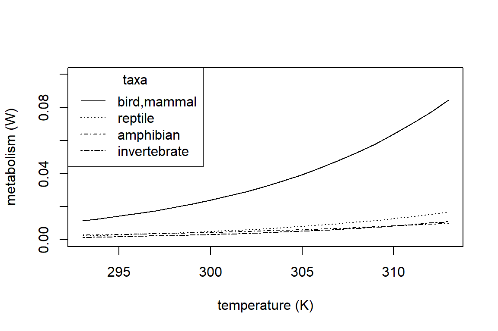
Evaporation, Qevap
We provide functions to estimate heat loss associated with evaporative water loss. We offer an empirically-derived relationship for a lizard (W. Porter et al. 1973; in Gates 2012) and a function based on resistances for amphibians (Spotila, O’connor, and Bakken 1992). The function for amphibians is based on the latent heat of vaporization of water: evaporation of water results in heat loss at a rate of \(2.44 \times 10^6 J kg^{-1}\) at biological temperatures.
The rate of water loss for an amphibian with fully wetted skin can be expressed as \[ E_c= A (\rho_s-h \rho_a)/r_e,\]
where \(A\) is surface area (\(m^2\)), \(r_e\) is the external (convective) resistance to water vapor transport (\(s/m\)), \(\rho_s\) is the saturation water vapor density at skin surface (\(kg/m^3\)), \(h\) is relative humidity (between 0 ~ 1), and \(\rho_a\) is the saturation water vapor density in ambient air (\(kg/m^3\)).
The rate of water loss for an amphibian without fully wetted skin can be expressed as \[E_c= A (\rho_s-h\rho_a)/(r_i+r_e),\] where \(r_i\) is the internal (cutaneous) resistance to vapor transport (\(s/m\)).
We provide R functions for heat loss through evaporation as the product of \(E_c\) and the latent heat of vaporization of water:
vp= saturation_vapor_pressure(293:313)#kPa
#convert to kg/m^3
rho_s= vp*0.032 #kg/m^3
vp= saturation_vapor_pressure(293:313-10)#kPa
#convert to kg/m^3
rho_a= vp*0.032 #kg/m^3
temps= 293:313
Qevaps= rep(NA,21)
Qevaps_wet= rep(NA,21)
for(ind in 1:21){
Qevaps[ind]=Qevaporation(A=0.1, T_b=temps[ind], taxa="amphibian", rho_s=rho_s[ind], rho_a=rho_a[ind], h=0.5, H=20, r_i=50)
Qevaps_wet[ind]=Qevaporation(A=0.1, T_b=temps[ind], taxa="amphibian_wetskin", rho_s=rho_s[ind], rho_a=rho_a[ind], h=0.5, H=20, r_i=50)
}
plot(temps, Qevaps, type="l", xlab = "body temperature (K)", ylab = "evaporative heat loss (W)", lty="dashed", ylim=c(0,400))
points(temps, Qevaps_wet, type="l", lty="dotted")
Qevap= unlist(lapply(293:313, FUN=Qevaporation, A=0.1, taxa="lizard"))
points(293:313, Qevap, type="l")
legend("right", title="taxa", legend=c("amphibian","amphibian_wetskin","lizard"), lty=c("dashed","dotted","solid") )
We estimate external resistance to water vapor transport, \(r_e\), using the Lewis rule describing the relationships among the coefficients for heat and mass transport: \(r_e= 0.93 \rho c_p/H_L\), where \(\rho\) is the density of air (\(kg m^{-3}\)), \(c_p\) is the specific heat of air at constant pressure (\(J kg^{-1}*°C^{-1}\)), and \(H_L\) is the convective heat transfer coefficient (\(W m^{-2} °C^{-1}\)). We approximate \(\rho c_p\)as 1,200 \(J m^{-3}*°C^{-1}\) as commonly done in biological applications (Spotila, O’connor, and Bakken 1992). We provide the relationship for \(r_e\) as a function:
par(mar=c(5,5,3,2))
plot(10:30, external_resistance_to_water_vapor_transfer(H=10:30), type="l", xlab = expression("heat transfer coefficient" ~ (W ~ m^{-2} ~ "°" ~ C^{-1})), ylab = expression("external resistance," ~ r[e] ~ (sm^{-1})))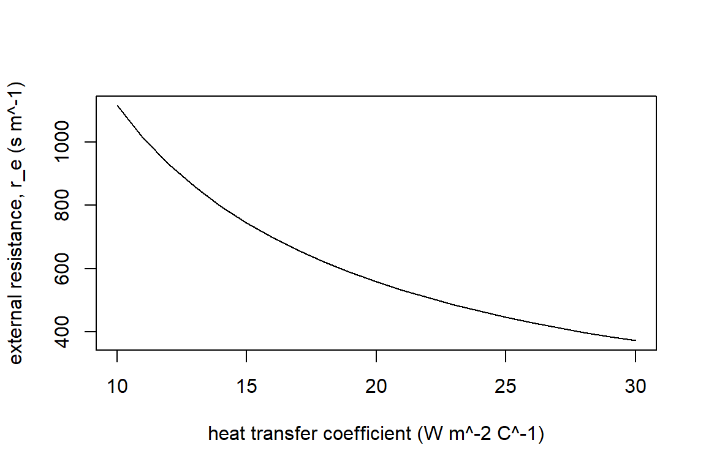
At constant temperatures, the relationship between vapor pressure and vapor density is linear and vapor pressure can be approximated at temperatures between \(0°C\) and \(40°C\) as \(e_s= 10^{0.02604 T_a+2.82488}\), where \(T_a\) is air temperature (\(°C\)). We provide the approximation as a function:
plot(10:30, saturation_water_vapor_pressure(T_a=10:30), type="l", xlab = "temperature (°C)", ylab = "saturation water vapor pressure (Pa)")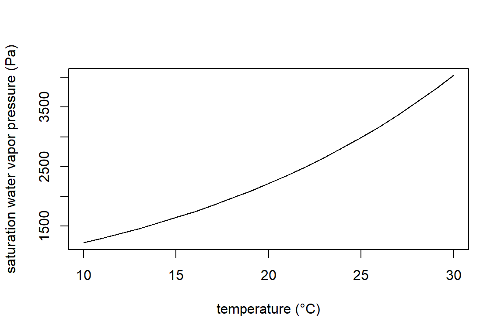
Solving for operative environmental temperature, Te
TrenchR primarily includes models for calculating the operative temperatures of organisms that have reached an equilibrium with their environment (“steady-state”, no heat retention). The following function uses the relationships above to solve the energy balance for \(Te\).
t.seq= lapply(293:313, FUN=Tb_Gates, A=0.1, D=0.001, psa_dir=0.6, psa_ref=0.4, psa_air=0.6, psa_g=0.0, T_g=303, Qabs=10, epsilon=0.95, H_L=10, ef=1.3, K=0.5)
plot(293:313, t.seq, type = "l", xlab = "ambient temperature, Ta (K)", ylab = "body temperature, Tb (K)", xlim=c(295,315), ylim=c(295,315))
abline(a=0,b=1, col="gray")
t.seq= lapply(293:313, FUN=Tb_Gates, A=0.1, D=0.001, psa_dir=0.6, psa_ref=0.4, psa_air=0.6, psa_g=0.0, T_g=303, Qabs=0, epsilon=0.95, H_L=10, ef=1.3, K=0.5)
points(293:313, t.seq, type = "l", lty="dashed")
t.seq= lapply(293:313, FUN=Tb_Gates, A=0.1, D=0.001, psa_dir=0.6, psa_ref=0.4, psa_air=0.6, psa_g=0.0, T_g=303, Qabs=20, epsilon=0.95, H_L=10, ef=1.3, K=0.5)
points(293:313, t.seq, type = "l", lty="dotted")
legend("bottomright", title="Radiation, Qabs", legend=c(0,10,20), lty=c("dashed","solid","dotted") )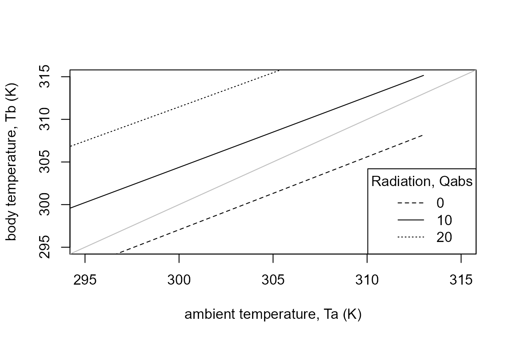
Campbell and Norman (2012) use a somewhat simplified energy balance to express \(Te\) as a function of \(Ta\) plus or minus a temperature increment determined by absorbed radiation, wind speed, and animal morphology: \[ Te=Ta+(Sabs-Qemit)/(c_p(g_r+g_{Ha})),\] where \(Ta\) is air temperature \((K)\), \(Sabs\) is the solar and thermal radiation absorbed (\(W m^{-2}\)), \(Qemit\) is emitted thermal radiation (\(W m^{-2}\)), \(c_p\) is the specific heat of air (\(J mol^{-1} K^{-1}\)), \(g_{r}\) is radiative conductance, and \(g_{Ha}\) is the boundary conductance. The model is based on estimating \(T_e\) for a blackbody (perfectly absorbing) cavity with air temperatures equal to surface temperatures (\(T_a=T_s\)). The model assumes that the cavity provides the same heat load as the nautral environment and thus equates metabolic heat production and evaporative cooling in the two environments. The formulation assumes a well mixed interior of the animal and also omits conduction with the substrate. In this scenario, organisms emit thermal radiation from their surface proproportional to the fourth power of \(T_a\): \[Q_{emit}= \epsilon \sigma T_a^4 ,\] where \(\epsilon\) is the proprtional longwave infrared emissivity of skin (0.95-1 for most animals, (Gates 2012)) and \(\sigma\) is the Stefan-Boltzmann constant (\(5.673*10^{-8} W m^{-2} K^{-4)}\)).
The thermal radiation exchanged between the animals and the walls of the cavity is proportional to the temperature differences and the radiative conductance. Cambell and Norman (2012) thus use a denominator term that combines thermal radiative exchange with convective heat exchange. The radiative conductance describing the heat exchange between the core of the animal and the environment is estimated as \(g_r= 4 \sigma Ta^3/c_p\) \((mol*m^{-2} s^{-1})\). The boundary conductance (heat exchange with the air via convection) is estimated assuming forced convection driven by naturally turbulent wind and an empirical approximation of animal shapes (J. W. Mitchell 1976): \[g_{Ha}(mol \:m^{-2} s^{-1})= 1.4 * 0.135 \sqrt{(V/D)},\] where 1.4 is a factor to account for increased convection in natural environments, \(V\) is wind speed (\(m/s\)), and \(D\) is the characteristic dimension of the animal (\(m\)).
The function to calculate \(T_e\) (called \(T_b\) for simplicity) is available in R follows (including the above calculations of \(Qemit\), \(g_r\), and \(g_{Ha}\)):
plot(293:313, Tb_CampbellNorman(T_a=293:313, S=800, epsilon=0.96, c_p=29.3, D=0.17, V=1), type="l", xlab = "air temperature (K)", ylab = "body temperature (K)", xlim=c(295,310), ylim=c(290,325))
abline(a=0, b=1, col="gray")
points(293:313, Tb_CampbellNorman(T_a=293:313, S=400, epsilon=0.96, c_p=29.3, D=0.17, V=1), type="l", lty="dashed")
points(293:313, Tb_CampbellNorman(T_a=293:313, S=600, epsilon=0.96, c_p=29.3, D=0.17, V=1), type="l", lty="dotted")
legend("bottomright", title= expression("Radiation, Sabs" ~ (W ~ m^{-2})), legend=c(400,600,800), lty=c("dashed","dotted","solid") )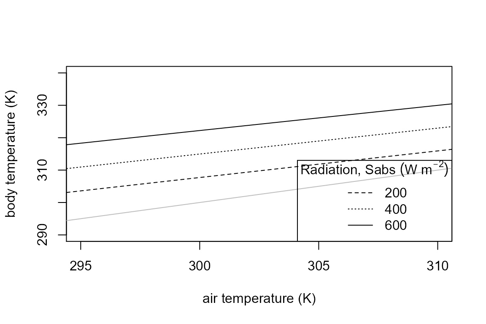
Fei
t.seq= lapply(293:313, FUN=Tb_Fei, T_g=300, H=800, lw=30, shade=0.5, m=10.5, Acondfact=0.05, Agradfact=0.4)
plot(293:313, t.seq, type = "l", xlab = "ambient temperature (°C)", ylab = "body temperature (°C)")
abline(a=0,b=1, col="gray")
t.seq= lapply(293:313, FUN=Tb_Fei, T_g=300, H=800, lw=30, shade=0.0, m=10.5, Acondfact=0.05, Agradfact=0.4)
points(293:313, t.seq, type = "l", lty="dashed")
t.seq= lapply(293:313, FUN=Tb_Fei, T_g=300, H=800, lw=30, shade=1.0, m=10.5, Acondfact=0.05, Agradfact=0.4)
points(293:313, t.seq, type = "l", lty="dotted")
legend("bottomright", title="proportion shade", legend=c(0.0,0.5,1.0), lty=c("dashed","solid","dotted") )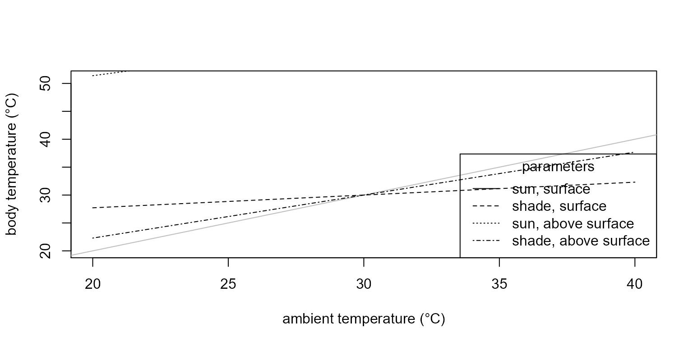
#STARTED TO FIXSpecialized energy balance models and functions
In addition to providing general functions that can be used to build heat budget models predicting the body temperatures for a variety of organisms, we implement specialized operative temperature models that have been developed for a variety of organisms.
Lizards
We adapted a biophysical model (Tb_lizard()) to calculate operative environmental temperature, \(T_e\), for lizards from Buckley (2007). The function follows the modeling approach contained Campbell and Norman (2012).
Day Length and Sun Angles
The function constrains the lizard’s foraging to hours of daylight and uses the relations below to calculate day length and the time of solar noon. The function calculates the solar declination, \(\delta\) (rad), the angular distance of the sun north or south of the earth’s equator: \[\delta= \arcsin[0.39795 \cos(0.21631+2 \arctan (0.967 \tan [0.0086(-186+J)]))] \] where \(J\) is calendar day, with \(J=1\) at January 1. One can then calculate day length, \(h_{day} (h)\), using the CBM model (Forsythe et al. 1995): where \(\phi\) is latitude (rad).
The time of solar noon (\(h\)) is calculated as \(t_0=12-LC-ET\) where \(LC\) is the longitude correction (h) and \(ET\) is the equation of time (h). The \(LC\) is a +1/15-h correction for each degree that a location is west of a standard meridian, which occurs at 0°, 15°, …, 345°. The ET corrects for the difference between sun time and clock time based on calendar day as follows: \[ET=\frac{-104.7\sin f+596.2 \sin{2f} +4.3 \sin{3f} -12.7 \sin{4f} -429.3 \cos{f} -2.0 \cos{2f}+19.3 \cos{3f}}{3600},\\f=\frac{\pi}{180}(279.575+0.9856J)\] The zenith angle, \(\psi\) (rad), is the sun angle measured from vertical, \(\cos{\psi}=\sin\delta \sin\phi + \cos\delta \cos\phi\cos\frac{\pi}{12(h-t_0)}\), where \(h\) is hour.
Radiation and Environmental Temperature
Central to the thermal influence of radiation is the Stefan‐Boltzmann law, which expresses the total radiant energy over all wavelengths admitted per unit surface area of a blackbody radiator. The law yields the emitted flux density, B (\(W m^2\)), \(B= \sigma(T_a+273)^4\), where \(\omega\) is the Stefan‐Boltzmann constant (\(5.67×10^{−8} W m^{−2} K^{−4}\)). Emissivity, \(\epsilon(\lambda)\), where \(\lambda\) is wavelength, is the fraction of blackbody emittance at a given wavelength emitted by the surface of a material. Gray bodies are those with no wavelength dependence of the emissivity. Thus, emitted energy of a gray body is \(\phi (W m^{−2})= \epsilon B\). We assume lizards are a gray body, which is reasonable for most natural surfaces. The emissivity of most natural surfaces ranges from 0.95 to 1.0. The function uses the emissivity value of 0.965 measured by Bartlett and Gates (1967) for a Sceloporus lizard. However, the emissivity of a clear atmosphere is substantially lower. We use the approximation by Swinbank (1963) to estimate clear sky emissivity, \(\epsilon_{ac}=9.2 * 10^{-6}(T_a+273)^2.\)
We first consider convective heat transport between the lizard’s body and the environment. The boundary conductance of air (\(mol \: m^{−2} s^{−1}\)) is expressed as \[g_{Ha}=1.4*0.135 \sqrt{u/d} ,\] where \(u\) is wind velocity (\(m s^{−1}\)) and \(d\) is the characteristic dimension (\(m\)). Assuming that wind is blowing parallel to the axis of a cylindrical approximation of a lizard, \(d\) is the lizard’s length (snout‐vent length [m]). A factor of 1.4 is introduced to account for the increased convection due to environmental turbulence (J. W. Mitchell 1976). We additionally consider radiative conductance, the exchange of thermal radiation between the lizard and the environment proportional to temperature differences. The radiative conductance (\(mol \:m^{−2} s^{−1}\)) is expressed as \[g_r=\frac{4 \epsilon \sigma (T_a+273)^3}{c_p},\] where \(c_p\) is the specific heat of air (29.3 \(J \: mol^{−1} K^{−1}\)).
We then turn to calculating the components of the radiant energy budget of a lizard. We estimate the solar (shortwave) component of this quantity by aggregating flux densities for four radiation streams: the direct irradiance on a surface perpendicular to the beam, \(S_p (W m^{−2})\); the diffuse sky irradiance on a horizontal plane, \(S_d (W m^{−2})\); the total irradiance of a horizontal surface, \(S_t (W m^{−2})\); and the reflected radiation from the ground, \(S_r (W m^{−2})\). Calculation of these flux densities requires the introduction of several additional quantities. The atmospheric transmissivity, \(\tau\), ranges between 0.6 and 0.7 for typical clear sky conditions (Gates 1980). We thus assume \(\tau=0.65\). The solar constant, \(S_{p0}\), indicates extraterrestrial flux density to be \(1,360 W m^{−2}\). Optical air mass number, \(m_a\), is the ratio of slant path length through the atmosphere to zenith path length and is a function of atmospheric pressure, \(p_a (kPa)\): \[p_a=101.3exp(-E/8200),\] where \(E\) is the elevation in meters above sea level. We can then calculate \(m_a\) as \(m_a=\frac{p_a}{101.3 \cos\psi}\).
Direct irradiance is a function of the distance a solar beam travels through the atmosphere; the transmittance of the atmosphere, \(\tau\); and the incident flux density, \(S_{p0}\): \(S_p=S_{p0}\tau^{m_a}\). Sky diffuse radiation can be approximated using an empirical relation [Liu and Jordan 1960], \(S_d=0.3(1-\tau^{m_a})S_{p0}\cos\psi\). Solar irradiance is the sum of diffuse sky irradiance and the beam irradiance on a surface: \(S_t=S_d+S_p \cos\psi\). Finally, reflected radiation is the product of albedo, \(\rho_S\), and the total shortwave irradiance: \(S_r=\rho_S S_t\). Albedo was empirically derived from satellite images and is the surface reflectance for the solar waveband.
The longwave component of a lizard’s radiant energy budget can be estimated using the Stefan‐Boltzmann law. The longwave flux density from atmosphere, \(L_a (W m^{−2})\), is computed as \(L_a=\epsilon_{ac}\sigma(T_a+273)^4\), where \(\epsilon_{ac}\) is clear sky emissivity. The longwave flux density from the ground is \(L_g=\epsilon_s \sigma T_s^4\), where \(\epsilon_s\) is surface emissivity.
One can then aggregate short‐ and longwave radiation to compute absorbed radiation: \[R_{abs}+\alpha_s(F_PS_p+F_dS_d+F_rS_r)+\alpha_L(F_aL_a+F_gL_g) ,\] where \(\alpha_S\) and \(\alpha_L\) are the absorptivities in the solar and thermal wavebands, respectively, and \(F_p\), \(F_d\), \(F_r\), \(F_a\), and \(F_g\) are view factors between the surface of the lizard and sources of radiation. Solar absorptivity, \(\alpha_S\), is approximately 0.9 for lizards (Gates 2012). Because absorptivity in a given waveband is equal to emissivity in that waveband, we use the thermal absorptivity, \(\alpha_L\), of 0.965, as measured by Bartlett and Gates (1967).
View factors refer to the fraction of radiation that is intercepted by the lizard. The beam view factor, \(F_p\), for a lizard is the ratio of the projected area perpendicular to the solar beam, \(A_p\), to the total animal area, \(A\), \(F_p=A_p/A\). We use an empirically derived relationship that was developed for a standing Callisaurus [Muth (1977). We assume a relative azimuth angle of 90°, which indicates that the long axis of the lizard is perpendicular to incoming solar radiation: \[ A_p= \frac{[(-1.1756*10^{-4})\psi^2+(-9.2594*10^{-2})\psi+26.2409]A}{100}.\] Roughgarden et al. (1981) provide an expression for total area based on empirical lizard data from Norris (1967) and Porter and James (1979): \(A=0.121m^{0.688}\) \((r^2=0.996),\) where \(m\) is mass in grams, and the relation holds for a variety of lizards from 2 to 50 g. For diffuse shortwave and longwave radiation, the sky can be approximated as a hemisphere. The diffuse radiation view factor, \(F_d\), for a standing lizard was found to be 0.8 by Bartlett and Gates (1967). We assume that one‐half of thermal radiation is received from both the ground and the sky. The atmospheric thermal radiation factor, \(F_a\), is thus 0.5, and the ground thermal radiation factor, \(F_g\), is 0.5. We likewise assume that the reflected solar radiation view factor, \(F_r\), is 0.5. The operative environmental temperature is calculated within each grid cell as \[Te=Ta+\frac{Rabs-\epsilon_s \sigma (T_a+273)^4}{c_p(g_r+g_{Ha})}\].
We implement the model in TrenchR as follows:
#sun, surface
t.seq= lapply(20:40, FUN=Tb_lizard, T_g=30, u=0.1, svl=60, m=10, psi=34, rho_S=0.7, elev=500, doy=200, sun=TRUE, surface=TRUE, alpha_S=0.9, alpha_L=0.965, epsilon_s=0.965, F_d=0.8, F_r=0.5, F_a=0.5, F_g=0.5)
plot(20:40, t.seq, type = "l", xlab = "ambient temperature (°C)", ylab = "body temperature (°C)", xlim=c(20,40), ylim=c(20,51))
abline(a=0,b=1, col="gray")
#shade, surface
t.seq= lapply(20:40, FUN=Tb_lizard, T_g=30, u=0.1, svl=60, m=10, psi=34, rho_S=0.7, elev=500, doy=200, sun=FALSE, surface=TRUE, alpha_S=0.9, alpha_L=0.965, epsilon_s=0.965, F_d=0.8, F_r=0.5, F_a=0.5, F_g=0.5)
points(20:40, t.seq, type = "l", lty="dashed")
#sun, above surface
t.seq= lapply(20:40, FUN=Tb_lizard, T_g=30, u=0.1, svl=60, m=10, psi=34, rho_S=0.7, elev=500, doy=200, sun=TRUE, surface=FALSE, alpha_S=0.9, alpha_L=0.965, epsilon_s=0.965, F_d=0.8, F_r=0.5, F_a=0.5, F_g=0.5)
points(20:40, t.seq, type = "l", lty="dotted")
#shade, above surface
t.seq= lapply(20:40, FUN=Tb_lizard, T_g=30, u=0.1, svl=60, m=10, psi=34, rho_S=0.7, elev=500, doy=200, sun=FALSE, surface=FALSE, alpha_S=0.9, alpha_L=0.965, epsilon_s=0.965, F_d=0.8, F_r=0.5, F_a=0.5, F_g=0.5)
points(20:40, t.seq, type = "l", lty="dotdash")
legend("bottomright",title="parameters", legend=c("sun, surface","shade, surface","sun, above surface","shade, above surface"), lty=c("solid","dashed","dotted","dotdash") )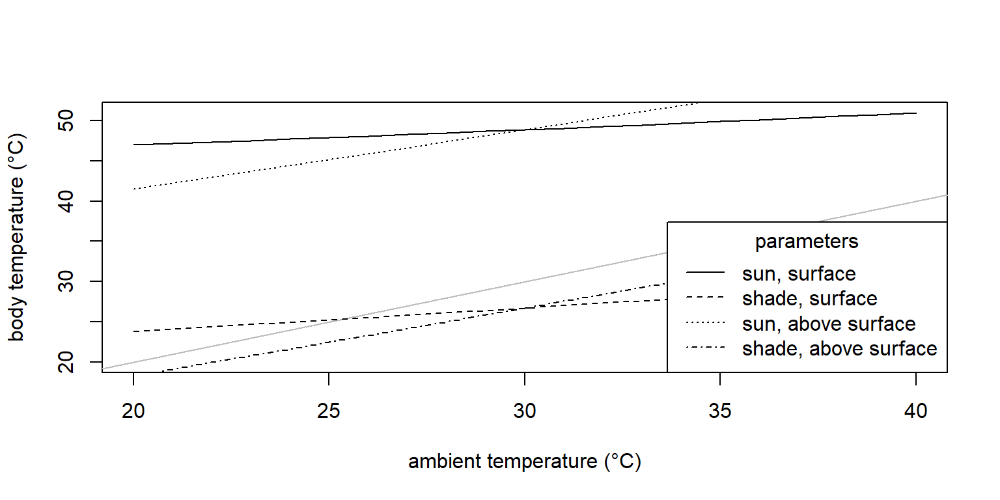
#? Include transient heat model in package?: https://github.com/JRubalcaba/BodyTemp.Butterflies
We adapted a biophysical model for Colias that was developed and field validated by Kingsolver (1983) to predict thoracic body temperature (\(T_b\)) based on thermoregulatory traits (body size, basal ventral hind wing solar absorptivity, and thoracic fur thickness), behavioral posture (basking and heat-avoidance), and environmental conditions. We briefly describe the model, which was updated and detailed in Buckley and Kingsolver (2012). Adults behaviorally thermoregulate to achieve the body temperatures needed for flight, and do not use endogenous heat production to elevate body temperatures. We assume that butterflies select the body temperature closest to their thermal optima (35°C) with available body temperatures bracketed by those in full sun (lateral basking posture with wings closed and the ventral hindwing surfaces oriented perpendicular to the sun) and full shade (no direct radiation). Assuming that butterflies select body temperatures bracketed by full sun and full shade eliminates the need to attempt to model microclimate availability in detail.
We describe the steady-state energy flux balance of a butterfly at rest on vegetation as \[Q_s= Q_t + Q_c,\] where \(Q_s\) is the total solar radiative heat flux, \(Q_t\) is the thermal radiative heat flux, and \(Q_c\) is the convective heat flux. Conduction of heat between the body and vegetation and evaporative heat loss are considered to be negligible. The solar radiative heat flux is \[ Q_s= Q_{s,dir}+Q_{s,dif}+Q_{s,ref},\\ Q_s= \alpha A_{s,dir}H_{s,dir}/cos(z) +\alpha A_{s,ref}H_{s,dif}+\alpha r_g A_{s,ref}H_{s,ttl}, \]
where \(Q_{s,dir}\),\(Q_{s,dif}\),\(Q_{s,ref}\) are the direct, diffuse, and reflected solar radiative fluxes, respectively; \(H_{s,dir}\),\(H_{s,dif}\),\(H_{s,ttl}\) are the direct, diffuse, and total solar radiative horizontal flux densities, respectively; \(A_{s,dir}\),\(A_{s,ref}\),\(A_{s,ttl}\) are the direct, reflected, and total solar radiative heat transfer surface areas, respectively; \(\alpha\) is wing solar absorptivity; \(r_g\) is substrate solar reflectivity; and \(z\) is the zenith angle. We assume \(A_{s,dir}=A_{s,ref}= A_{s,ttl}\).
Thermal radiative flux including both downward radiation and reflected solar radiation is estimated as follows: \[Q_t=0.5A_t \epsilon \sigma (T_b^4-T_{sky}^4)+0.5A_t \epsilon \sigma (T_b^4-T_g^4),\] where \(A_t\) is the thermal radiative heat transfer surface area, \(T_b\) is the body temperature, \(T_g\) is the ground surface temperature, \(T_{sky}\) is the equivalent black body sky temperature, \(\epsilon\) is butterfly thermal emissivity, and \(\sigma\) is the Stefan-Boltzman constant.
The convective heat flux is given by: \[Q_c= h_T A_c (T_b-T_a), \] where \(A_c\) is the convective heat transfer surface area and \(T_a\) is the air temperature. We assume \(A_c=A_t= A_{s,ttl}\). The total convective heat transfer coefficient, \(h_T\), is calculated as the boundary layer conductance \(h_c\) and the fur layer conduction in series: \[1/h_T=1/h_c+\frac{(r_i+\delta)ln[(r_i+\delta)/r_i]}{k_e} ,\] where \(\delta\) is the thoracic fur thickness and \(k_e\) is the thermal conductivity of the fur. The boundary layer conductance, \(h_c\), can be estimated using the relationship between two non-dimensional numbers. The Nusselt number, \(Nu=h_c D/ka\), is the ratio of convective to conductive heat transfer, where \(k_a\) is the thermal conductivity of air. We used the maximum width of the mesothorax as the characteristic dimension of the butterfly, \(D\). The Reynolds number, \(Re=uD/v\), is the ratio of inertial forces to viscous forces, where \(u\) is wind speed and \(v\) is kinematic viscosity. We used the Nu-Re relation for a cylinder, \(Nu=0.6Re^{0.5}\), which is a reasonable approximation for Colias. We estimate energy flux balance in order to estimate \(T_b\).
We provide the operative temperature model for butterflies as follows:
t.seq= lapply(20:40, FUN=Tb_butterfly, Tg=25, Tg_sh=20, u=0.4, H_sdir=300, H_sdif=100, z=30, D=0.36, delta=1.46, alpha=0.6, r_g=0.3)
plot(20:40, t.seq, type = "l", xlab = "ambient temperature (°C)", ylab = "body temperature (°C)")
abline(a=0,b=1, col="gray")
t.seq= lapply(20:40, FUN=Tb_butterfly, Tg=25, Tg_sh=20, u=0.4, H_sdir=100, H_sdif=100, z=30, D=0.36, delta=1.46, alpha=0.6, r_g=0.3)
points(20:40, t.seq, type = "l", lty="dashed")
t.seq= lapply(20:40, FUN=Tb_butterfly, Tg=25, Tg_sh=20, u=0.4, H_sdir=500, H_sdif=100, z=30, D=0.36, delta=1.46, alpha=0.6, r_g=0.3)
points(20:40, t.seq, type = "l", lty="dotted")
legend("bottomright",title= expression("direct radiation," ~ H[sdif]), legend=c(100,300,500), lty=c("dashed","solid","dotted") )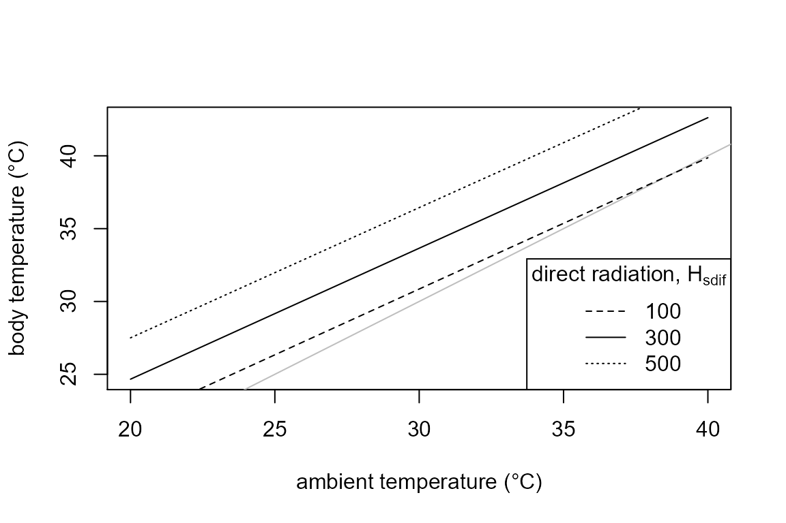
Grasshoppers
We provide a biophysical model (Tb_grasshopper()) to predict grasshopper body temperatures (Buckley, Nufio, and Kingsolver 2014, partially adapted from Samietz, Salser, and Dingle (2005)). We use an energy budget to describe the flow of energy between the grasshopper and the environment: \(Q_s=Q_t+Q_c+Q_{cond}\). Here \(Q_s\) is the total input of heat due to solar radiation. \(Q_t\) describes the flux of thermal radiative heat due to both incoming thermal radiation (ground and sky) and that emitted by the grasshopper. \(Q_c\) is flux of heat between the grasshopper and the surrounding fluid (air) via convection. \(Q_{cond}\) is the flux of heat between the grasshopper’s body and the solid surfaces with which the grasshopper’s body is in contact via conduction. We omit evaporative heat loss as it should be negligible for the grasshopper (Anderson, Tracy, and Abramsky 1979).
The solar radiative heat flux is estimated as the sum of direct (\(Q_{s,dir}\)), diffuse (\(Q_{s,dif}\)), and reflected (\(Q_{s,ref}\)) components (Kingsolver 1983): \[ Q_s= Q_{s,dir}+Q_{s,dif}+Q_{s,ref},\\ Q_s= \alpha A_{s,dir}H_{s,dir}/cos(z) +\alpha A_{s,ref}H_{s,dif}+\alpha r_g A_{s,ref}H_{s,ttl}. \]
Each component is calculated as the product of the solar absorptivity of the grasshopper (we assume \(\alpha=0.7\), (Anderson, Tracy, and Abramsky 1979)), the horizontal flux of solar radiation (\(H_{s,dir}\), \(H_{s,dif}\), and \(H_{s,ttl}\) for the direct, diffuse, and total fluxes, respectively), and the silhouette area of the grasshopper exposed to solar radiation (\(A_{s,dir}\), \(A_{s,dif}\), and \(A_{s,ttl}\) for the direct, diffuse, and total surface areas, respectively). The direct radiation is adjusted for the zenith angle (\(z\), degrees), which is the angle of the sun away from vertical.
We calculate the surface area by approximating the body of a female grasshopper as a rotational ellipsoid (Samietz, Salser, and Dingle 2005). The major axis is equal to the grasshopper’s length. We calculate the semi-minor axis (half of the grasshopper’s width) as \(a=(0.365+0.241*1000 L)/1000\) using a regression from Lactin and Johnson (1998). If \(e=\sqrt{1-a^2/c^2}\), surface area can be calculated as follows: \[A= 2 \pi a^2+\frac{2 \pi a c}{e \arcsin{e}}.\] The ratio of silhouette area to surface area of a grasshopper is a linear function of zenith angle: \(A_s/A = 0.19-0.00173z\). Thus, \(A_{s,dir}=A_{s,ref}=(0.19-0.00173z)A\). We partitioned the observed total radiation (\(H_{s,ttl}\)) into diffuse (\(H_{s,dif}\)) and direct (\(H_{s,dir}\)) components using the polynomial function of a clearness index, \(k_t\), developed by Erbs et al. (1982).
We estimate thermal radiative flux as the sum of radiation from the sky and ground. We assume that one half of the grasshopper’s body is subject to atmospheric radiation and the other half is subject to thermal radiation from the ground surface. Thermal radiation is calculated using the Stefan-Boltmann law, which states that radiative flux is proportional to the forth power of the absolute temperature of a body. Here \(T_b\) is the absolute body temperature, \(T_g\) is the absolute ground surface temperature, and \(T_{sky}\) is the equivalent black body sky temperature [\(T_{sky}=0.0552(T_a+273)^{1.5}\), (Swinbank 1963)]. The Stefan-Boltzmann constant (\(\sigma\)) characterizes the proportionality of this relationship. The thermal emissivity (\(\epsilon\)) accounts for incomplete absorption or emission of thermal radiation, but in this case we assume that both the grasshopper and ground are perfect black bodies (\(\epsilon=1\)). We account for the thermal radiative heat transfer surface area (\(A_t=A\)). The relationship is thus: \[Q_t=0.5A_t \epsilon \sigma (T_b^4-T_{sky}^4)+0.5A_t \epsilon \sigma (T_b^4-T_g^4).\]
Convective heat flux is estimated as the product of the convective heat transfer coefficient in turbulent air (\(h_{cs}\)), the grasshopper’s surface area exposed to convective heat flux (\(A_c=A\)), and the temperature difference between the grasshopper’s body temperature (\(T_b\)) and air temperature (\(T_a\)): \[Q_c= h_T A_c (T_b-T_a). \] We calculate \(h_{cs}\) from the convective heat transfer coefficient as \(h_{cs}=h_c(-0.007z/L+1.71)\) where \(z\)=0.001m is the height above the ground. We use an empirically-derived relationship for grasshoppers to estimate the heat transfer coefficient, \(h_c (Wm^{-2}*°C^{-1})\) (Lactin and Johnson 1998): \(h_c = Nu K_f/L\), where the thermal conductivity of fluid, \(K_f(W m^{-1}K^{-1})=0.024+0.00007(T_a+273)\).
We use an empirical relationship from Anderson et al. (1998) to estimate the Nusselt number, \(Nu\), as \(Nu=0.41 Re^{0.5}\) where \(Re\) is the Reynolds number. \(Re=u L/v\), where \(u\) is windspeed (\(m/s\)) and \(v\) is the kinematic viscosity of air (\(m^2/s\)) (\(v=15.68 \times 10^{-6}\) at \(300K\)).
The rate of conduction is a function of the body area in contact with the substrate and the temperature differential between the body and the surface: \[Q_{cond}= h_{cut} A_{cond} (T_b-T_g)/T, \] where \(h_{cut}\) is the thermal conductivity of the grasshopper cuticle (approximated as \(0.15 W m^{-1} K^{-1}\); value for hornets; (Galushko et al. 2005)); \(A_{cond}\) is the surface area of the grasshopper in contact with the substrate; and \(T\) is the cuticle thickness (approximated as \(6 \times 10^{-5}m\); (Galushko et al. 2005)). We only model conductance through the cuticle as we assume that the interior of the grasshopper is well mixed.
We provide the operative temperature model for grasshoppers as follows:
t.seq= lapply(20:40, FUN=Tb_grasshopper, T_g=25, u=0.4, H=800, K_t=0.7, psi=30, L=0.05, Acondfact=0.00, z=0.001, abs=0.7, r_g=0.3)
plot(20:40, t.seq, type = "l", xlab = "ambient temperature (°C)", ylab = "body temperature (°C)", xlim=c(20,40), ylim=c(20,40))
abline(a=0,b=1, col="gray")
t.seq= lapply(20:40, FUN=Tb_grasshopper, T_g=25, u=0.4, H=400, K_t=0.7, psi=30, L=0.05, Acondfact=0.00, z=0.001, abs=0.7, r_g=0.3)
points(20:40, t.seq, type = "l", lty="dashed")
t.seq= lapply(20:40, FUN=Tb_grasshopper, T_g=25, u=0.4, H=600, K_t=0.7, psi=30, L=0.05, Acondfact=0.00, z=0.001, abs=0.7, r_g=0.3)
points(20:40, t.seq, type = "l", lty="dotted")
legend("bottomright",title= expression("direct radiation, H"), legend=c(200,400,600), lty=c("dashed","dotted","solid") )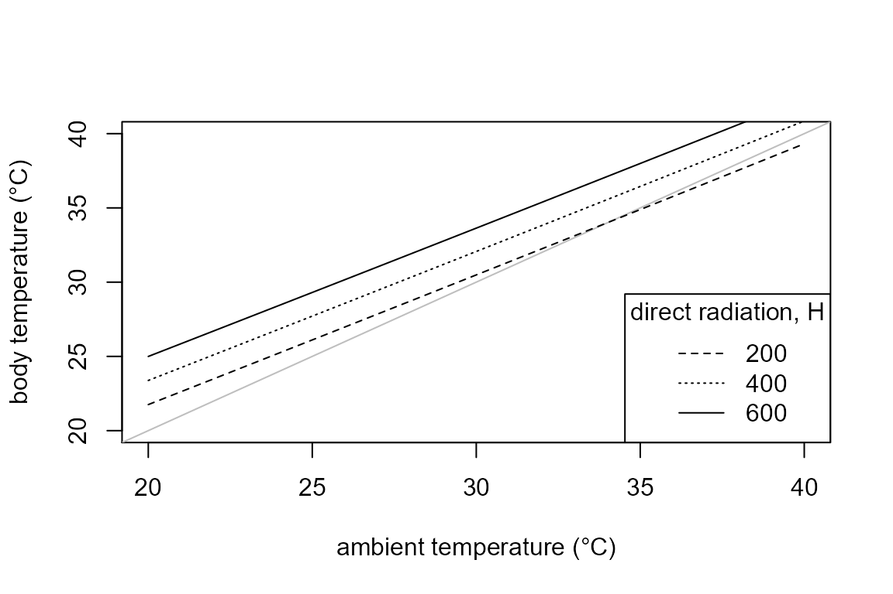
#clean up code?Salamander
plot(0:40, actual_vapor_pressure(Tdewpoint=0:40), type="l", xlab = "dewpoint temperature (°C)", ylab = "vapor pressure (kPa)")
points(0:40, saturation_vapor_pressure(T_a=273:(40+273)), type="l", lty="dashed")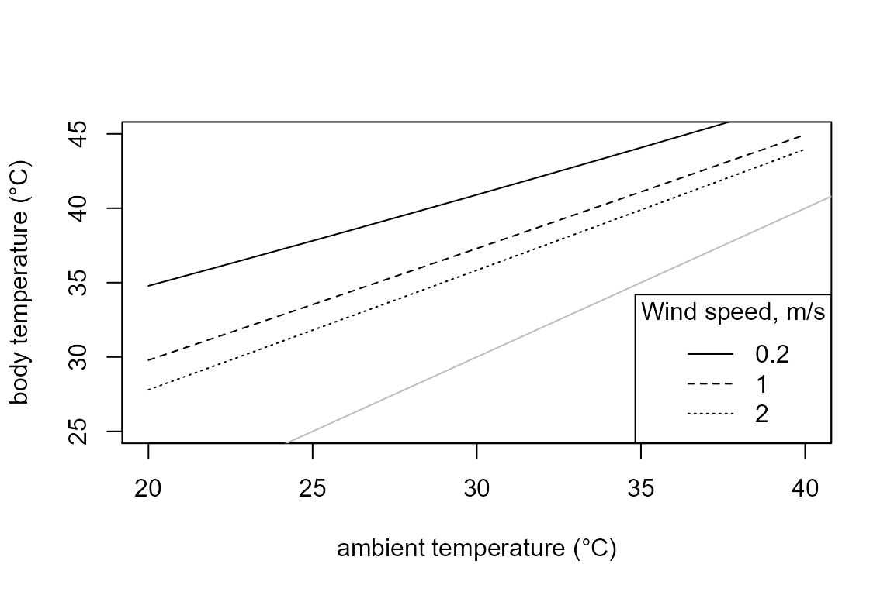
par(mar=c(5,5,3,2))
blr.seq= lapply(293:313, FUN=boundary_layer_resistance, e_s=2.4, e_a=2.5, elev=500, D=0.007, u=2)
plot(293:313, blr.seq, type = "l", xlab = "air temperature (K)", ylab = expression("boundary layer resistance" ~ (s ~ cm^{-1})))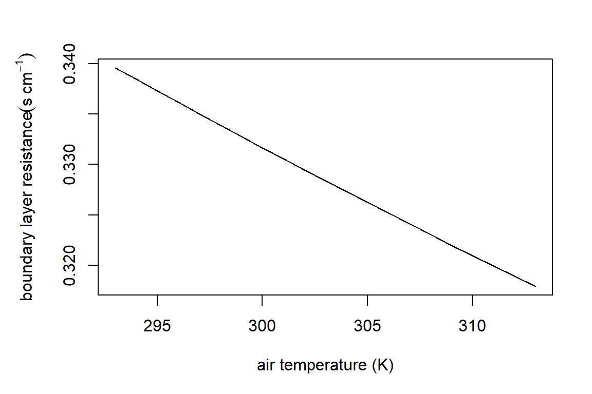
blr.seq= lapply(sqrt(5:20), FUN=boundary_layer_resistance, T_a=293, e_s=2.4, e_a=2.5, elev=500, u=2)
plot(sqrt(5:20), blr.seq, type = "l", xlab = "diameter (m)", ylab = expression("boundary layer resistance" ~ (s ~ cm^{-1})))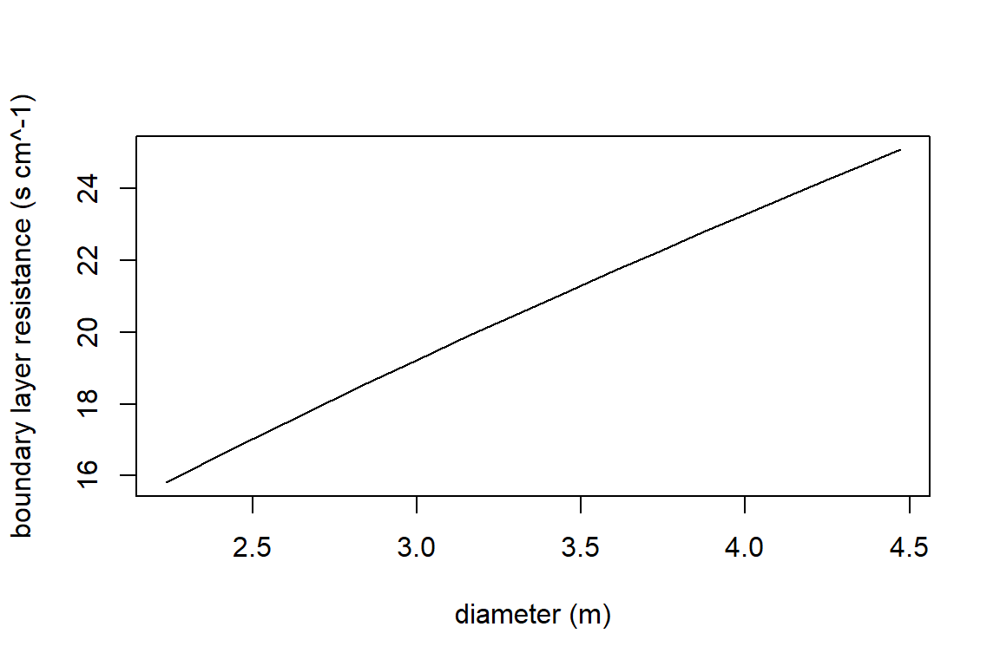
#APPROXIMATELY CHECKEDt.seq= lapply(20:40, FUN=Tb_salamander_humid, r_i=4,r_b=1,D=0.01,elev=500,e_a=2.5,e_s=2.3,Qabs=400, epsilon=0.96)
plot(20:40, t.seq, type = "l", xlab = "ambient temperature (°C)", ylab = "humid operative temperature (°C)")
abline(a=0, b=1, lty="dotted")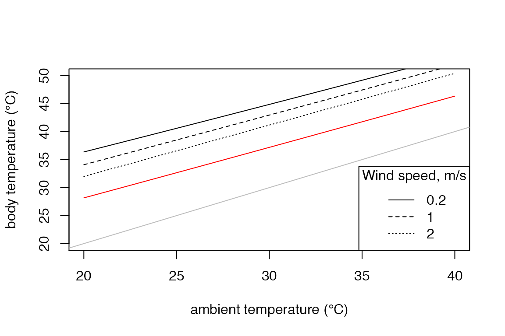
#CHECK WITH ERIC?plot(20:40, Qthermal_radiation_absorbed(T_a=20:40, T_g=30, epsilon_ground=0.97, a_longwave=0.965), type="l", xlab = "air temperature (°C)", ylab = "thermal radiation absorbed (W)")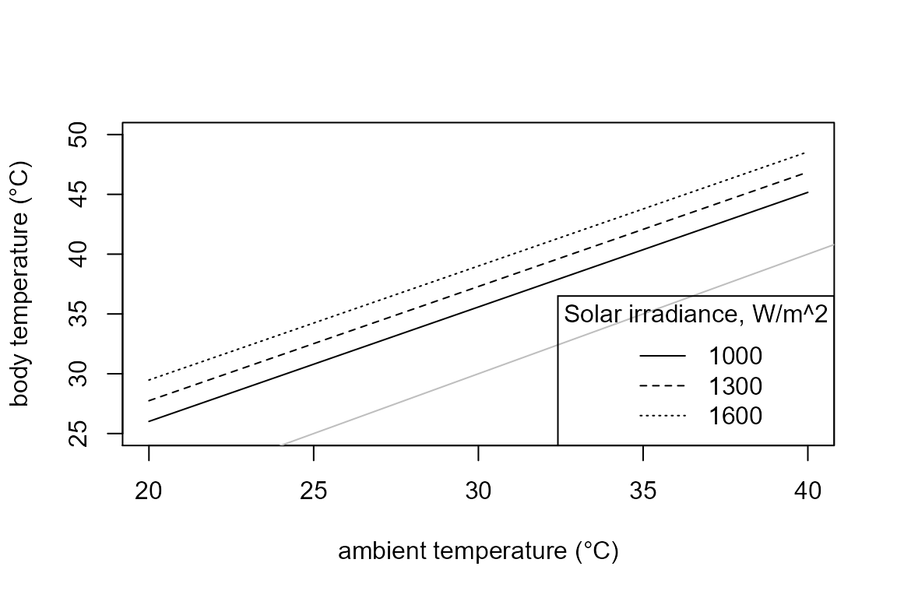
Qemitted_thermal_radiation(epsilon=0.96, A=1, psa_dir=0.4, psa_ref=0.6, T_b=303, T_g=293, T_a=298, enclosed=FALSE)## [1] 78.35451#CHECK WITH ERIC?Tsoil var
plot(1:24, Tsoil(Tg_max=30, Tg_min=15, hour=1:24, depth=0), type="l", xlab = "hour", ylab = "soil temperature (°C)")
points(1:24, Tsoil(Tg_max=30, Tg_min=15, hour=1:24, depth=5), type="l", lty="dashed")
points(1:24, Tsoil(Tg_max=30, Tg_min=15, hour=1:24, depth=10), type="l", lty="dotted")
points(1:24, Tsoil(Tg_max=30, Tg_min=15, hour=1:24, depth=20), type="l", lty="dotdash")
legend("topleft",title="depth (cm)", legend=c(0,5,10,20), lty=c("solid","dashed","dotted","dotdash") )Example operative environmental temperature calculations
Suppose we want to estimate the hourly body temperature (operative environmental temperature, \(T_e\)) of a Sceloporus lizard on June 1, 2018 in Santa Fe, New Mexico, USA (35.69, -105.944, elevation: 2121m). Let’s assume the lizard is in an unshaded location where the daily air temperature varies from a minimum of 10°C to a maximum of 25°C, the soil surface temperature varies from a minimum of 15C to a maximum of 30°C, and the windspeed is 0.5 m/s. We assume that atmospheric transmissivity \(\tau=0.7\) and albedo \(\rho=0.6\).
We will initially estimate \(T_b\) by balancing an energy balance for steady state conditions. We then use the \(T_b\) estimates to explore the components of an energy balance.
Environmental data
Let us first prepare the environmental data for analysis. We will need to estimate hourly air and soil temperatures and radiation. We start by estimating day of year and the timing of sunrise and sunset:
#set up input data as variables
lat=35.69; lon= -105.944; elev=2121
Tmin=10; Tmax=25; Tmin_s=15; Tmax_s=30
V=0.5 #wind speed
#assumptions
tau=0.7; rho=0.6
doy= day_of_year("2018-06-01", format= "%Y-%m-%d")
snoon= solar_noon(lon=lon, doy=doy)
dayl= daylength(lat=lat, doy=doy)
tr= snoon-dayl/2
ts= snoon+dayl/2We can estimate hourly solar radiation as follows:
psi_deg= sapply(1:24, FUN=zenith_angle, doy=doy, lat=lat, lon=lon)
psi_rad= degree_to_radian(psi_deg) #convert to radians
Srad= sapply(psi_rad, FUN=estimate_radiation, doy=doy, tau=tau, elev=elev, rho=rho)
#Separate into direct, diffuse, and reflected solar radiation
Sdir= Srad[1,]
Sdif= Srad[2,]
Sref= Srad[3,]
#Plot
plot(1:24, Sdir, type="l", xlab = "hour", ylab = expression(radiation ~ (W/m^{2})), ylim=c(0,1200))
points(1:24, Sdif, type="l", lty="dotted")
points(1:24, Sref, type="l", lty="dashed")
legend("topright", title="Solar radiation component", legend=c("direct", "diffuse", "reflected"), lty=c("solid","dotted","dashed") )
We can then calculate hourly air and soil temperatures. We use the sine-exponential model for air temperature and the sine model for surface temperature:
Operative temperature estimation
We will first use functions based on energy balances to estimate body temperature given the environmental conditions. We first need to estimate several energy balance parameters. We first estimate the surface area exposed to radation We model a 10g Sceloporus lizard with solar aborptivity \(a=0.9\) (Gates 2012).
mass=10
a=0.9 #solar absorptivity
#estimate surface area (m^2) from mass (g)
A= sa_from_mass(mass, "lizard")
#estimate projected (silhouette) area as a portion of surface area
psa= sapply(psi_deg, prop_silhouette_area, taxa= "lizard", posture= "elevated")
#change negative values to zero
psa[psa<0]=0
#Total radiation
Qabs= psa*Sdir +0.5*Sdif +0.5*SrefWe then estimate the lizard’s heat transfer coefficient, \(H_L\) using an empirical relationship for lizards (heat_transfer_coefficient()), but also illustrate a function estimating \(H_L\) using a spherical approximation (heat_transfer_coefficient_approximation()) and a simplified approximation (heat_transfer_coefficient_simple()).
#Use DRYAIR in NicheMapR to estimate thermal conductivity of air and kinematic viscocity
#library(NicheMapR)
#estimate Barometric pressure (pascal)
ap= airpressure_from_elev(elev)*1000
DRYAIRout= DRYAIR(db=Ta, bp=ap, alt=elev)
K= DRYAIRout$thcond
nu= DRYAIRout$viskin #Kinematic viscosity (m2 s-1)
svl=0.06 #SVL for Sceloporus
#We will use the average of K and nu across the day for simplicity and since there's not substantial variation
K= mean(K)
nu=mean(nu)
#Estimate using empirical relationship
H_L=heat_transfer_coefficient(V=V,D=svl,K=K, nu= 15.3 * 10^(-6) , taxa="lizard_surface")
#Also illustrate estimations using a spherical approximation and a simplified version of the approximation.
heat_transfer_coefficient_approximation(V=V,D=svl,K= K, nu= 15.3 * 10^(-6), taxa="lizard")## [1] 22.49314heat_transfer_coefficient_simple(V=0.5,D=0.05)## [1] 14.80412We now implement the first energy balance.
TeGates= rep(NA, 24)
for(hr in 1:24) TeGates[hr]= Tb_Gates(A=A, D=svl/3, psa_dir=psa[hr], psa_ref=0.5, psa_air=0.5, psa_g=0.05, T_g=Ts[hr]+273, T_a=Ta[hr]+273, Qabs=Qabs[hr]*A, epsilon=epsilon_s, H_L=H_L, ef=1.3, K=0.5)## [1] "Unable to balance energy budget. One issue to check is whether absorbed solar radiation exceeds energy potentially lost to thermal radiation, convection, and conduction."
## [1] "Unable to balance energy budget. One issue to check is whether absorbed solar radiation exceeds energy potentially lost to thermal radiation, convection, and conduction."
## [1] "Unable to balance energy budget. One issue to check is whether absorbed solar radiation exceeds energy potentially lost to thermal radiation, convection, and conduction."
## [1] "Unable to balance energy budget. One issue to check is whether absorbed solar radiation exceeds energy potentially lost to thermal radiation, convection, and conduction."
## [1] "Unable to balance energy budget. One issue to check is whether absorbed solar radiation exceeds energy potentially lost to thermal radiation, convection, and conduction."
## [1] "Unable to balance energy budget. One issue to check is whether absorbed solar radiation exceeds energy potentially lost to thermal radiation, convection, and conduction."
## [1] "Unable to balance energy budget. One issue to check is whether absorbed solar radiation exceeds energy potentially lost to thermal radiation, convection, and conduction."
## [1] "Unable to balance energy budget. One issue to check is whether absorbed solar radiation exceeds energy potentially lost to thermal radiation, convection, and conduction."
## [1] "Unable to balance energy budget. One issue to check is whether absorbed solar radiation exceeds energy potentially lost to thermal radiation, convection, and conduction."
## [1] "Unable to balance energy budget. One issue to check is whether absorbed solar radiation exceeds energy potentially lost to thermal radiation, convection, and conduction."
## [1] "Unable to balance energy budget. One issue to check is whether absorbed solar radiation exceeds energy potentially lost to thermal radiation, convection, and conduction."
## [1] "Unable to balance energy budget. One issue to check is whether absorbed solar radiation exceeds energy potentially lost to thermal radiation, convection, and conduction."
## [1] "Unable to balance energy budget. One issue to check is whether absorbed solar radiation exceeds energy potentially lost to thermal radiation, convection, and conduction."
## [1] "Unable to balance energy budget. One issue to check is whether absorbed solar radiation exceeds energy potentially lost to thermal radiation, convection, and conduction."
## [1] "Unable to balance energy budget. One issue to check is whether absorbed solar radiation exceeds energy potentially lost to thermal radiation, convection, and conduction."
## [1] "Unable to balance energy budget. One issue to check is whether absorbed solar radiation exceeds energy potentially lost to thermal radiation, convection, and conduction."
## [1] "Unable to balance energy budget. One issue to check is whether absorbed solar radiation exceeds energy potentially lost to thermal radiation, convection, and conduction."
## [1] "Unable to balance energy budget. One issue to check is whether absorbed solar radiation exceeds energy potentially lost to thermal radiation, convection, and conduction."
## [1] "Unable to balance energy budget. One issue to check is whether absorbed solar radiation exceeds energy potentially lost to thermal radiation, convection, and conduction."
## [1] "Unable to balance energy budget. One issue to check is whether absorbed solar radiation exceeds energy potentially lost to thermal radiation, convection, and conduction."
## [1] "Unable to balance energy budget. One issue to check is whether absorbed solar radiation exceeds energy potentially lost to thermal radiation, convection, and conduction."
## [1] "Unable to balance energy budget. One issue to check is whether absorbed solar radiation exceeds energy potentially lost to thermal radiation, convection, and conduction."
## [1] "Unable to balance energy budget. One issue to check is whether absorbed solar radiation exceeds energy potentially lost to thermal radiation, convection, and conduction."
## [1] "Unable to balance energy budget. One issue to check is whether absorbed solar radiation exceeds energy potentially lost to thermal radiation, convection, and conduction."We also implement a similiar but simplied energy balance. The energy balance omits conduction with the ground and thus underestimates temperatures, but we implement it for comparison purposes:
epsilon_s=0.965
TeCN= rep(NA, 24)
for(hr in 1:24) TeCN[hr]= Tb_CampbellNorman(T_a=Ta[hr]+273, S=Qabs[hr], epsilon=epsilon_s, c_p=29.3, D=svl, V=V)We additionally estimate \(Te\) using the specialized function for lizards:
TeLiz= rep(NA, 24)
for(hr in 1:24) TeLiz[hr]= Tb_lizard(T_a=Ta[hr], T_g=Ts[hr], u=V, svl=svl*1000, m=mass, psi=psi_deg[hr], rho_S=rho, elev=elev, doy=doy, sun=TRUE, surface=TRUE, alpha_S=a, alpha_L=0.965, epsilon_s=epsilon_s, F_d=0.8, F_r=0.5, F_a=0.5, F_g=0.5)
TeFei= rep(NA, 24)
for(hr in 1:24) TeFei[hr]= Tb_Fei(T_a=Ta[hr]+273, T_g=Ts[hr]+273, H=Qabs[hr], lw=30, shade=0.5, m=10.5, Acondfact=0.05, Agradfact=0.4)We next plot the diurnal trends in environmental data and the operative data.
par(mar=c(4, 4, 1, 4), mgp=c(2, 1, 0), las=0)
plot(1:24, TeGates-273, type="l", xlab="Hour", ylab="Temperature (°C)", col="blue", ylim=c(0,80)) #Gates
points(1:24, TeCN-273, type="l", col="blue", lty="dotted") #Campbell
points(1:24, TeLiz, type="l", col="blue", lty="dashed") #Buckley 2008
points(1:24, TeFei-273, type="l", col="blue", lty="dotdash") #Fei et al.
points(1:24, Ta, type="l", col="orange")
points(1:24, Ts, type="l", col="purple")
# #add additional axis with radiation
par(new = T)
plot(1:24, Sdir, pch=16, axes=F, xlab=NA, ylab=NA, type="l", col="green")
axis(side = 4)
mtext(side = 4, line = 2, 'Radiation', col="green")
legend("topleft",
legend=c("Ta", "Ts", "Tb_Gates", "Tb_CampbellNorman", "Tb_lizard", "Tb_Fei"),
lty=c("solid", "solid", "solid","dotted","dashed","dotdash"), pch=NA, col=c("orange", "purple", "blue","blue","blue","blue"))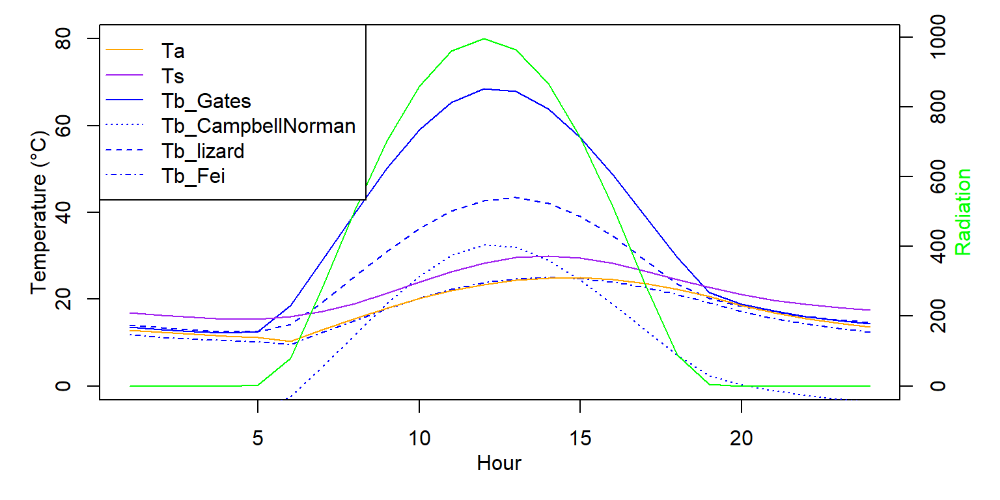
Energy balance
We will now use the body temperature estimates to examine the components of the energy balance. We will be solving the following energy balance: \[Qnet = Qabs - Qemit - Qconv - Qcond + Qmet - Qevap,\] We will estimate each term on the right side of the equation in turn.
We calculate the hourly radiation asborbed as follows:
Qabs= rep(NA, 24)
for(hr in 1:24) Qabs[hr]= Qradiation_absorbed(a=a, A=A, psa_dir=psa[hr], psa_ref=1-psa[hr], S_dir=Sdir[hr], S_dif=Sdif[hr], a_s=rho)We estimate thermal radiation \(Q_{emit}\) for the lizard outdoors. We assume the surface emisivity of lizards, \(epsilon_s=0.965\) [Bartlett & Gates 1967].
#Use Gates model as Te estimate
Te= TeGates-273
Qemit= rep(NA, 24)
for(hr in 1:24) Qemit[hr]=Qemitted_thermal_radiation(epsilon=epsilon_s, A=A, psa_dir=psa[hr], psa_ref=1-psa[hr], T_b=Te[hr]+273, T_g=Ts[hr]+273, T_a=Ta[hr]+273, enclosed=FALSE)We next estimate convection \(Q_{conv}\) and conduction \(Q_{cond}\). We estimate convective heat exchange between the animal and surrounding air using the following relationship: \[Qconv= ef*H_L*(A*proportion)*(Ta-Tb),\] where an enhancement factor, \(ef\), multiplier can be incorported to account for increases in heat exchange resulting from air turbulance in field conditions.
The function is available in R assuming that 2/3 of the lizard’s surface area is exchanging heat through convection.
Qconv= rep(NA, 24)
for(hr in 1:24) Qconv[hr]= Qconvection(T_a= Ta[hr]+273,T_b= Te[hr]+273,H=H_L,A=A, proportion=0.67, ef=1.3)We estimate conductance between the lizard and surface assuming conductance through the animal tissue is the rate limiting step as follows: \[Qcond= A*proportion*K*(T_g-T_b)/d, \] We conduct the estimate in R assuming that 1/3 of the lizard surface is in contact with the ground and a skin thinkness of \(10^{-6}\):
Qcond= rep(NA, 24)
for(hr in 1:24) Qcond[hr]=Qconduction_animal(T_g= Ts[hr]+273,T_b=Te[hr]+273,d=svl/3,K=0.5,A=A, proportion=0.05)We assume, as in generally done for lizards, that heat exchange associated with metabolism and evaporation is negliglible:
Qmet= 0
Qevap= 0The full heat budget can be calculated as follows. We plot out the energy balance components.
Qnet= Qnet_Gates(Qabs=Qabs, Qemit=Qemit, Qconv=Qconv, Qcond=Qcond, Qmet=Qmet, Qevap=Qevap)
#Plot
plot(1:24, Qnet, type="l", xlab = "hour", ylab = expression("heat flux" ~ (W/m^{2})), ylim=c(-1,4))
points(1:24, Qabs, type="l", lty="dotted")
points(1:24, Qemit, type="l", lty="dashed")
points(1:24, Qconv, type="l", lty="dotdash")
points(1:24, Qcond, type="l", lty="twodash")
legend("topright", title="component", legend=c("net radition, Qnet", "solar radiation, Qabs", "thermal radiation, Qemit","convection, Qconv","conduction, Qcond"), lty=c("solid","dotted","dashed","dotdash","twodash") )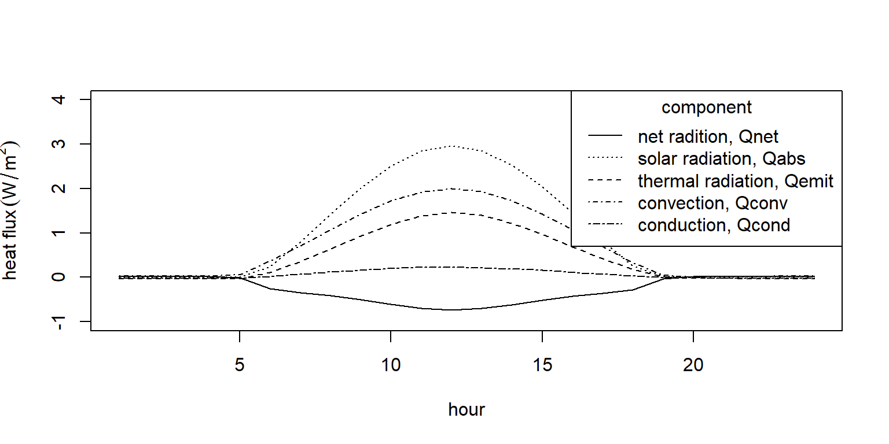
References
Anderson, RV, CR Tracy, and Z Abramsky. 1979. “Habitat Selection in Two Species of Short-Horned Grasshoppers.” Oecologia 38 (3). Springer: 359–74.
Bakken, George S. 1992. “Measurement and Application of Operative and Standard Operative Temperatures in Ecology.” American Zoologist 32 (2). Oxford University Press UK: 194–216.
Barlett, Peter N, and David M Gates. 1967. “The Energy Budget of a Lizard on a Tree Trunk.” Ecology 48 (2). Wiley Online Library: 315–22.
Buckley, Lauren B. 2007. “Linking Traits to Energetics and Population Dynamics to Predict Lizard Ranges in Changing Environments.” The American Naturalist 171 (1). The University of Chicago Press: E1–E19.
Buckley, Lauren B, and Joel G Kingsolver. 2012. “The Demographic Impacts of Shifts in Climate Means and Extremes on Alpine Butterflies.” Functional Ecology 26 (4). Wiley Online Library: 969–77.
Buckley, Lauren B, Cesar R Nufio, and Joel G Kingsolver. 2014. “Phenotypic Clines, Energy Balances and Ecological Responses to Climate Change.” Journal of Animal Ecology 83 (1). Wiley Online Library: 41–50.
Campbell, Gaylon S, and John Norman. 2012. An Introduction to Environmental Biophysics. Springer Science & Business Media.
Erbs, DG, SA Klein, and JA Duffie. 1982. “Estimation of the Diffuse Radiation Fraction for Hourly, Daily and Monthly-Average Global Radiation.” Solar Energy 28 (4). Elsevier: 293–302.
Forsythe, William C, Edward J Rykiel Jr, Randal S Stahl, Hsin-i Wu, and Robert M Schoolfield. 1995. “A Model Comparison for Daylength as a Function of Latitude and Day of Year.” Ecological Modelling 80 (1). Elsevier: 87–95.
Galushko, D, N Ermakov, M Karpovski, A Palevski, JS Ishay, and DJ Bergman. 2005. “Electrical, Thermoelectric and Thermophysical Properties of Hornet Cuticle.” Semiconductor Science and Technology 20 (3). IOP Publishing: 286.
Gates, David M. 2012. Biophysical Ecology. Courier Corporation.
Gillooly, James F, James H Brown, Geoffrey B West, Van M Savage, and Eric L Charnov. 2001. “Effects of Size and Temperature on Metabolic Rate.” Science 293 (5538). American Association for the Advancement of Science: 2248–51.
Kingsolver, Joel G. 1983. “Thermoregulation and Flight in Colias Butterflies: Elevational Patterns and Mechanistic Limitations.” Ecology 64 (3). Wiley Online Library: 534–45.
Lactin, Derek J, and Dan L Johnson. 1998. “Environmental, Physical, and Behavioural Determinants of Body Temperature in Grasshopper Nymphs (Orthoptera: Acrididae).” The Canadian Entomologist 130 (5). Cambridge University Press: 551–77.
Mitchell, John W. 1976. “Heat Transfer from Spheres and Other Animal Forms.” Biophysical Journal 16 (6). Cell Press: 561–69.
Muth, Allan. 1977. “Thermoregulatory Postures and Orientation to the Sun: A Mechanistic Evaluation for the Zebra-Tailed Lizard, Callisaurus Draconoides.” Copeia. JSTOR, 710–20.
Norris, Kenneth S. 1967. “Color Adaptation in Desert Reptiles and Its Thermal Relationships.” In Lizard Ecology: A Symposium, 162–229. University of Missouri Press Columbia.
Porter, WP, and FC James. 1979. “Behavioral Implications of Mechanistic Ecology Ii: The African Rainbow Lizard, Agama Agama.” Copeia. JSTOR, 594–619.
Porter, WP, JW Mitchell, WA Beckman, and CB DeWitt. 1973. “Behavioral Implications of Mechanistic Ecology.” Oecologia 13 (1). Springer: 1–54.
Roughgarden, Jonathan, Warren Porter, and David Heckel. 1981. “Resource Partitioning of Space and Its Relationship to Body Temperature in Anolis Lizard Populations.” Oecologia 50 (2). Springer: 256–64.
Samietz, J, MA Salser, and H Dingle. 2005. “Altitudinal Variation in Behavioural Thermoregulation: Local Adaptation Vs. Plasticity in California Grasshoppers.” Journal of Evolutionary Biology 18 (4). Wiley Online Library: 1087–96.
Spotila, JR, MP O’connor, and GS Bakken. 1992. “Biophysics of Heat and Mass Transfer.” Environmental Physiology of the Amphibians. University of Chicago Press, Chicago, 59–80.
Swinbank, W CQJR. 1963. “Long-Wave Radiation from Clear Skies.” Quarterly Journal of the Royal Meteorological Society 89 (381). Wiley Online Library: 339–48.